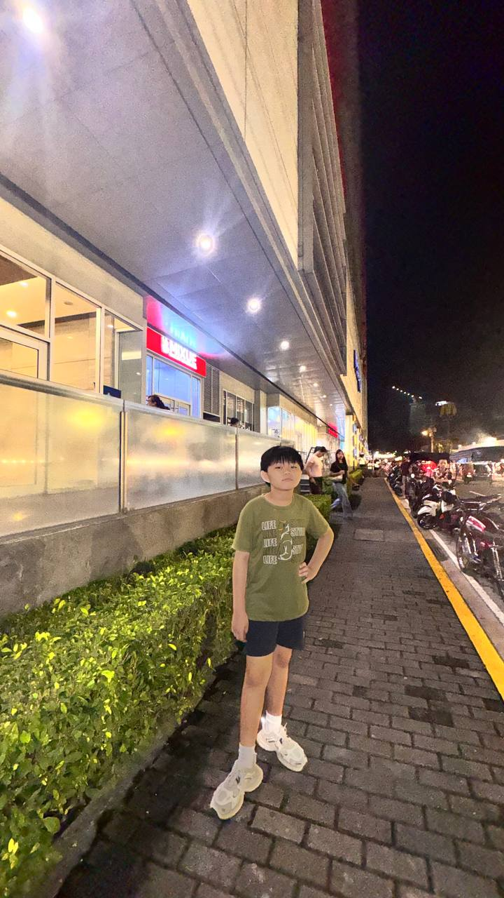

Design Background
My foundation comes from a decade in graphic design, creating visual systems, campaigns, and branded content with a clean and modern direction.
Graphic Designer | Illustrator | Digital Nomad
I am a digital nomad currently based in Hong Kong. I've been working in graphic design for the past ten years. It was only in the past three years that I decided to focus full-time on illustrating.

About
My foundation comes from a decade in graphic design, creating visual systems, campaigns, and branded content with a clean and modern direction.
Over the last three years, I shifted into illustration full-time, building work that feels personal, story-driven, and visually expressive.
Being based in Hong Kong shapes my perspective. Fast streets, lights, motion, and culture all feed into the way I create and present my work.
Gallery

